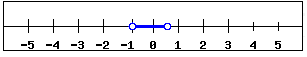

MAT-101: Module 1B Absolute Value Equations and Inequalities
Objectives:Absolute Value Equations
Solving Linear Equations - Absolute Value
When solving equations with absolute value we can end up with more than one possible answer. This is because the expression inside the absolute value can be either negative or positive and we must account for both possibilities when solving equations. This is illustrated in the following example.
Example 1B-1:
| $|x| = 7$ | Absolute value can be positive or negative |
| $x=7$ or $x=-7$ | Our Solution |
Notice that we have considered two possibilities, both the positive and negative. Either way, the absolute value of our number will be positive $7$.
World View Note: The first set of rules for working with negatives came from 7th century India. However, in 1758, almost a thousand years later, British mathematician Francis Maseres claimed that negatives "Darken the very whole doctrines of the equations and make dark of the things which are in their nature excessively obvious and simple."
When we have absolute values in our problem it is important to first isolate the absolute value, then "remove the absolute value" by considering both the positive and negative solutions separately. Notice in the next two examples, all the numbers outside of the absolute value are "moved to the other side" first before we remove the absolute value bars and consider both positive and negative solutions.| $5+|x| = 8$ | Notice absolute value is not alone on the LHS |
| $\underline{-5\,\,\,\,\,\,\,\,\,\,\,\,\,\,-5}$ | Subtract $5$ from both sides |
| $|x| = 3$ | Absolute value can be positive or negative |
| $x=3$ or $x=-3$ | Our Solution |
| $-4|x|=-20$ | Notice absolute value is not alone on the LHS |
| $\overline{-4}\,\,\,\,\,\,\,\,\,\,\,\,\,\,\overline{-4}$ | Divide both sides by $-4$ |
| $|x| = 5$ | Absolute value can be positive or negative |
| $x=5$ or $x=-5$ | Our Solution |
Notice we never combine what is inside the absolute value with what is outside the absolute value. This is very important as it will often change the final result to an incorrect solution. The next example requires two steps to isolate the absolute value. The idea is the same as a two-step equation, add or subtract, then multiply or divide.
Example 1B-4:| $5|x|-4 = 26$ | Notice absolute value is not alone on the LHS |
| $\underline{+4\,\,\,\,+4}$ | Add $4$ to both sides |
| $5|x| = 30$ | Absolute value still not alone |
| $\overline{5\,}\,\,\,\,\,\,\,\,\,\,\,\,\,\,\overline{\,5\,}$ | Divide both sides by $5$ |
| $|x| = 6$ | Absolute value can be positive or negative |
| $x=6$ or $x=-6$ | Our Solution |
Again we see the same process: get the absolute value alone first, then consider the positive and negative solutions. Often the absolute value will have more than just a variable in it. In this case we will have to solve the resulting equations when we consider the positive and negative possibilities. This is shown in the next example.
Example 1B-5:| $|2x-1| = 7$ | Absolute value can be positive or negative |
| $2x-1=7$ or $2x-1=-7$ | Two equations to solve |
Now notice we have two equations to solve, each equation will give us a different solution. Both equations solve (separately) like any other two-step equation.
| $2x-1=7$ | $\,\,\,\,\,$ | $2x-1=-7$ |
| $\underline{+1\,+1}$ | $\,\,\,\,\,$ | $\underline{+1\,\,\,\,\,+1}$ |
| $2x=8$ | $\,\,\,\,$ or | $2x=-6$ |
| $\overline{2}\,\,\,\,\,\,\,\,\,\,\overline{2}$ | $\,\,\,\,\,$ | $\overline{2}\,\,\,\,\,\,\,\,\,\,\,\,\overline{\,2\,}$ | $x=4$ | $\,\,\,\,\,$ | $x=-3$ |
Thus, from our previous example we have two solutions, $x = 4$ or $x = -3$
Again, it is important to remember that the absolute value must be alone first before we consider the positive and negative possibilities. This is illustrated in the below example.
Example 1B-6:To get the absolute value alone we first need to subtract the $2$ from both sides, then divide by $-4$ (the coefficient on the absolute value). Notice we cannot combine the $2$ and $-4$ because they are not like terms: the $-4$ is multiplied by the absolute value expression. Also notice we do not distribute the $-4$ into the absolute value. This is because the numbers outside cannot be combined with the numbers inside the absolute value. Thus we get the absolute value alone in the following way:
| $2-4|2x + 3| = -18$ | Notice absolute value is not alone |
| $\underline{-2\,\,\,\,\,\,\,\,\,\,\,\,\,\,\,\,\,\,\,\,\,\,\,\,\,\,\,\,\,\,\,\,\,\,-2\,\,\,\,}$ | Subtract $2$ from both sides |
| $-4|2x + 3| = - 20$ | Absolute value still not alone |
| $\overline{-4\,}\,\,\,\,\,\,\,\,\,\,\,\,\,\,\,\,\,\,\,\,\,\,\,\,\,\overline{\,-4\,}$ | Divide both sides by $-4$ |
| $|2x+3| = 5$ | Absolute value can be positive or negative |
| $2x+3=5$ or $2x+3=-5$ | Two equations to solve |
Now we just solve these two remaining equations to find our solutions.
| $2x+3=5$ | $\,\,\,\,\,$ | $2x+3=-5$ |
| $\underline{-3\,-3}$ | $\,\,\,\,\,$ | $\underline{-3\,\,\,\,\,-3}$ |
| $2x=2$ | $\,\,\,\,$ or | $2x=-8$ |
| $\overline{2}\,\,\,\,\,\,\,\,\,\,\overline{2}$ | $\,\,\,\,\,$ | $\overline{2}\,\,\,\,\,\,\,\,\,\,\,\,\overline{\,2\,}$ | $x=1$ | $\,\,\,\,\,$ | $x=-4$ |
We now have our two solutions, $x = 1$ and $x = -4$.
As we are solving absolute value equations it is important to be aware of special cases. Remember the result of an absolute value must always be positive. Notice what happens in the next example.
Example 1B-7:| $7+|2x-5|=4$ | Notice absolute value is not alone |
| $\underline{-7\,\,\,\,\,\,\,\,\,\,\,\,\,\,\,\,\,\,\,\,\,\,\,\,\,\,-7\,\,}$ | Subtract $7$ from both sides |
| $|2x-5| = -3$ | Result of absolute value is negative! |
Notice the absolute value equals a negative number! This is impossible with absolute value. When this occurs we say there is no solution.
Absolute Value Inequalities
When an inequality has an absolute value we will have to remove the absolute value in order to graph the solution or give interval notation. The way we remove the absolute value depends on the direction of the inequality symbol.
Consider $|x|<2$.
Absolute value is defined as distance from zero. Another way to read this inequality would be the distance from zero is less than $2$. So on a number line we will shade all points that are less than 2 units away from zero.
This graph looks just like the graphs of the three part compound inequalities! When the absolute value is less than a number we will remove the absolute value by changing the problem to a three part inequality, with the negative value on the left and the positive value on the right. So $|x| < 2$ becomes $-2 < x < 2$, as the graph above illustrates.
Consider $|x|>2$.
Absolute value is defined as distance from zero. Another way to read this inequality would be the distance from zero is greater than $2$. So on the number line we shade all points that are more than $2$ units away from zero.

This graph looks just like the graphs of the OR compound inequalities! When the absolute value is greater than a number we will remove the absolute value by changing the problem to an OR inequality, the first inequality looking just like the problem with no absolute value, the second flipping the inequality symbol and changing the value to a negative. So $|x| > 2$ becomes $x > 2$ or $x <-2$, as the graph above illustrates.
World View Note: The phrase "absolute value" comes from German mathematician Karl Weierstrass in 1876, though he used the absolute value symbol for complex numbers. The first known use of the symbol for integers comes from a 1939 edition of a college algebra text!
For all absolute value inequalities we can also express our answers in interval notation which is done the same way it is done for standard compound inequalities.
We can solve absolute value inequalities much like we solved absolute value equations. Our first step will be to isolate the absolute value. Next we will remove the absolute value by making a three part inequality if the absolute value is less than a number, or making an OR inequality if the absolute value is greater than a number. Then we will solve these inequalities. Remember, if we multiply or divide by a negative the inequality symbol will switch directions!
Example 1B-8: Solve, graph, and give interval notation for the solution.
| $|4x-5|\geq 6$ | Absolute value is greater, use OR |
| $4x-5\geq 6$ or $4x-5\leq -6$ | Solve |
| $\underline{+5\phantom{1}+5}\phantom{123456}\underline{+5\phantom{12}+5}$ | Add $5$ to both sides |
| $4x\geq 11$ or $4x\leq -1$ | Divide both sides by $4$ |
| $\overline{4}\phantom{1234}\overline{4}\phantom{123}\overline{4}\phantom{12345}\overline{4}$ | $\,$ |
| $x\geq \dfrac{11}{4}$ OR $x\leq -\dfrac{1}{4}$ | Graph |
 |
Our graph |
| $\left(-\infty,-\dfrac{1}{4}\right]\cup\left[\dfrac{11}{4},\infty\right)$ | Interval notation |
Example 1B-9: Solve, graph, and give interval notation for the solution.
| $-4-3|x|\leq -16$ | Add $4$ to both sides |
| $\underline{+4\phantom{123456789}+4}$ | $\,$ |
| $-3|x|\leq -12$ | Divide both sides by negative 3 |
| $\overline{-3}\phantom{123456}\overline{-3}$ | Dividing by a negative switches the inequality direction |
| $|x|\color{red}{\geq} 4$ | Absolute value is greater, use OR |
| $x\geq 4$ OR $x\leq -4$ | Graph |
 |
Our graph |
| $(-\infty,-4]\cup[4,\infty)$ | Interval notation |
In the previous example, we cannot combine $-4$ and $-3$ because they are not like terms, the $-3$ has an absolute value attached. So we must first clear the $-4$ by adding $4$, then divide by $-3$. The next example is similar.
Example 1B-10: Solve, graph, and give interval notation for the solution.
| $9-2|4x+1|\gt 3$ | Subtract $9$ from both sides |
| $\underline{-9\phantom{12345678910}-9}$ | $\,$ |
| $-2|4x+1|\gt -6$ | Divide both sides by $-2$ |
| $\overline{-2}\phantom{123456789}\overline{-2}$ | Dividing by a negative switches the inequality direction |
| $|4x+1|\color{red}{\lt} 3$ | Absolute value is less, use three part |
| $-3\lt 4x+1\lt 3$ | Subtract 1 from all three parts |
| $\underline{-1\phantom{12345}-1\phantom{1}-1}$ | $\,$ |
| $-4\lt 4x \lt 2$ | Divide all three parts by $4$ |
| $\overline{4}\phantom{123}\overline{4}\phantom{123}\overline{4}$ | $\,$ |
| $-1\lt x \lt\dfrac{1}{2}$ | Graph |
|  | Our graph |
| $\left(-1,\dfrac{1}{2}\right)$ | Interval notation |
In the previous example, we cannot distribute the $-2$ into the absolute value. We can never distribute or combine things outside the absolute value with what is inside the absolute value. Our only way to solve is to first isolate the absolute value by clearing the values around it, then either make a compound inequality (an OR or a three part) to solve.
It is important to remember as we are solving these equations, the absolute value is always positive. If we end up with an absolute value less than a negative number, then we will have no solution! Similarly, if we end up with an absolute value greater than a negative, this will always happen. Here the answer will be all real numbers.
Example 1B-11: Solve, graph, and give interval notation for the solution.
| $12+4|6x-1|\lt 4$ | Subtract $12$ from both sides |
| $\underline{-12\phantom{123456789}-12}$ | $\,$ |
| $4|6x-1|\lt -8$ | Divide both sides by $4$ |
| $\overline{4}\phantom{12345678910}\overline{4}$ | Dividing by a positive--DON'T switch the inequality direction |
| $|6x-1|\lt -2$ | Absolute value can't be less than a negative! |
| No Solution | or $\{\}$ |
Example 1B-12: Solve, graph, and give interval notation for the solution.
| $5-6|x+7|\leq 17$ | Subtract $5$ from both sides |
| $\underline{-5\phantom{123456789}-5}$ | $\,$ |
| $-6|x+7|\leq 12$ | Divide both sides by $-6$ |
| $\overline{-6}\phantom{12345678910}\overline{-6}$ | Dividing by a negative switches the inequality direction |
| $|x+7|\color{red}{\geq} -2$ | Absolute value always greater than negative! |
| $x$ can be any real number: $-\infty\lt x \lt\infty$ | or $(-\infty, \infty)$ |